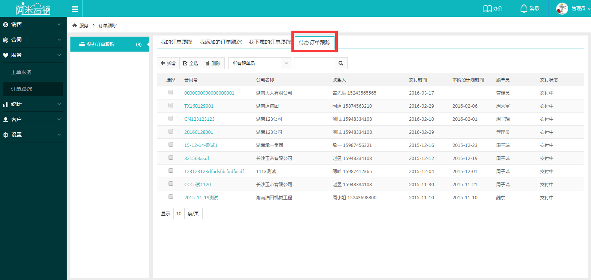
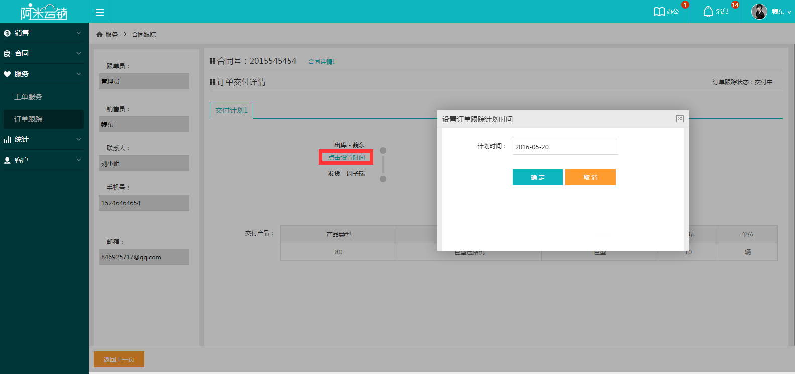
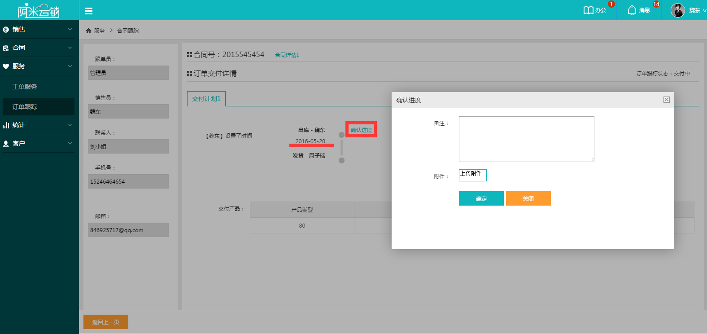
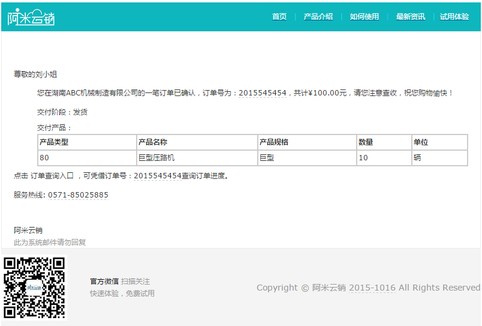

1跟单员添加完订单跟踪后，会对所有步骤的责任人发送邮件提醒，此时，第一步骤的责任人会在【订单跟踪-待办订单跟踪】列表看到订单信息，点击进入查看详情；
2订单跟踪步骤一目了然，此时跟单员没有设置完成时间，所以，责任人可以点击设置时间自行设置时间，设置完毕后，跟单员可以进行再次修改，如果跟单员在设置了时间，此处负责人就不需要设置时间了；
3设置好完成时间后，当本步骤完成后就可以点击确认进度，备注选填，此时订单跟踪就会流转至下一个步骤负责人，操作同上；
4当确认进度的时间晚于计划完成时间时，则此时确认进度就是逾期状态，逾期状态必须选择逾期原因和备注信息；
5订单跟踪每次确认步骤，如果在系统设置中选择了给客户发送邮件的话，客户都会收到邮件提醒。
